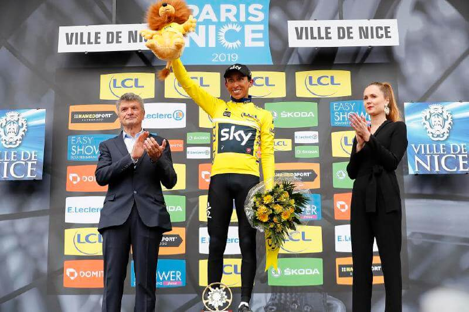

Lo que dejó el debut de Queiroz con Colombia
Como él mismo lo dijo, no busca una revolución, sino afinar la orquesta. Es muy poco tiempo para analizar su trabajo, pero esto fue o que dejó su primer partido al frente del equipo tricolor.
Es muy poco lo que se puede hacer en cuatro días de trabajo, sólo dos con el grupo completo. Carlos Queiroz se ha apoyado hasta ahora en los conceptos de su asistente técnico Arturo Reyes, técnico de la selección Sub-20 y quien estuvo a cargo del equipo mayor desde que José Pékerman dejó el cargo, después del Mundial de Rusia 2018. “Vamos a afinar la orquesta”, dijo Queiroz en rueda de prensa, antes de su debut ante Japón, reconociendo que su labor por ahora sólo sería dar algunos retoques y construir sobre lo construido, no derribar todo y comenzar de ceros.
Y eso fue lo que se vio en el planteamiento inicial del partido. No se apostó a una revolución con grandes cambios. Más bien, se acudió a la memoria colectiva. En defensa, se apostó a la pareja de centrales que cada vez se consolida más: Yerry Mina y Dávinson Sánchez . Los laterales, por obligación, tuvieron que ser nuevos, sin embargo, ambos cumplieron con un aceptable partido.
En la zona de marca, Queiroz eligió a una pareja de volantes defensivos con mayores capacidades de destrucción que de generación de juego. Y quizá esa fue una apuesta arriesgada. Barrios y Lerma nunca habían jugado juntos como titulares y se notó por momentos falta de entendimiento, sobre todo al momento de tener que sacar al equipo desde atrás. A ambos les costó la efectividad en los pases, sobretodo a Lerma, quien se vio sólido en defensa pero muy débil en ataque.
Y esa falta de generación en la primera línea, terminó afectando a James, quien en la mayor parte del juego se vio lejos de su zona favorita. Tuvo que bajar muchos metros para recibir la pelota y no estuvo fino en los pases. Por las bandas, Sebastián Villa y Luis Fernando Muriel marcaron diferencia, sin embargo, fueron jugadas aisladas, no provenientes de un planteamiento claro del entrenador.
Falcao, por su parte, pivoteó bien y luchó en su zona. Como no recibía el balón de manera limpia en el área rival, se salió metros para atrás para intentar conectarse con sus compañeros.
La idea de Queiroz no se verá de manera rápida, es necesario el trabajo con el equipo, algo que se logrará sólo con el tiempo. Quizás, hasta la Copa América será muy pronto y cuando realmente se verá la mano del entrenador portugués será en el comienzo de las eliminatorias.
En el entretiempo, de algo sirvió las charla técnica. Pues se corrigieron algunos factores, como los movimientos de los volantes de marca, quienes sufrieron menos. Luego llegó un cambio clave, como el ingreso de Duván Zapata, quien le dio mayor peso al ataque. Por momentos jugó por la banda derecha, pero cuando más se notó fue cuando jugó en punta. Un remate suyo terminó en el penal que luego marcó Falcao. Luego, otro remate de él pegó en el palo y con su potencia complicó a los defensas nipones.
La generación de juego será el punto a corregir. Que el equipo pueda no sólo intentar tener la pelota y tocar en zonas muertas, sino que sea agresivo en el campo rival. Los conceptos por ahora parecen ser recuperar la identidad del fútbol colombiano, el juego de toque, de movimientos rápidos, pero sólo el tiempo y el trabajo demostrarán si el camino por el que se va es el indicado.
Hay jugadores que podrían aportar mucho en lo que falta y que no pudieron actuar por lesión o por decisión técnica, como es el caso de Juan Fernando Quintero, Juan Guillermo Cuadrado, Edwin Cardona o Juan Camilo Hernández.
El homenaje a Quintero en el primer gol de la era Queiroz
Falcao García marcó el primer gol con el portugués al mando del equipo con un penal. En la celebración recordaron a Juanfer que sufrió una grave lesión.
En su primer gol en la era Queiroz al mando de Colombia, los jugadores de la Selección le rindieron un sentido homenaje a Juan Fernando Quintero.
Tras la anotación de Radamel Falcao García por medio de un penalti, los compañeros de Juanfer fueron por una camiseta del 20 marcada con el nombre del jugador de River Plate, que sufrió una grave lesión de rodilla que lo mantendrá al menos 6 meses fuera de las canchas.
El autor del gol junto a James Rodríguez y Yerry Mina exhibieron la camiseta enviándole un mensaje de fuerza a su compañero y amigo.
La anotación se originó gracias a una mano de Tomiyasu que desvió un remate de Duván Zapata.
El Tigre se encargó del cobro y alcanzó 33 goles con la Tricolor, ratificando su posición como el máximo goleador histórico de la Selección.
Juanfer Quintero será operado este jueves luego de su rotura de ligamentos
Toda la fe estaba depositada en él para la Copa América 2019. Pero así es el fútbol. En el mejor momento de su carrera, Juan Fernando Quintero sufrió una de las peores lesiones que puede sufrir un deportista:rotura de ligamento cruzado anterior.El '10' de River Plate, debido a la buena evolución de la inflamación en su rodilla izquierda, será operado este jueves por el médico del club, Pedro Hansing.
Lea: Juan Fernando Quintero ya sabe superar los golpes del fútbol
"El mejor jugador del fútbol argentino se lesionó y es una pena. Cuando terminó el partido su actitud era muy buena, como diciendo: 'Bueno, de esto hay que salir adelante", dijo Rodolfo D'Onofrio, presidente del club millonario.
El jugador, luego de las innumerables muestras de apoyo y solidaridad,mandó un mensaje en sus redes sociales. "Gracias a cada uno de ustedes que se tomo el tiempo para enviarme un mensaje, una voz de aliento y de mucha fuerza. SOLO QUIERO AGRADECER A TODOS. Esto se cura con AMOR y FE . La fuerza ya está porque proviene de DIOS".
Juanfer fue, junto a Yerry Mina, uno de los mejores jugadores de la selección en el Mundial de Rusia 2018. Y en diciembre pasado fue el autor del gol más importante en la historia de River Plate en la final de Copa Libertadores ante Boca Juniors. Ya era figura en el cuadro Millonario.
El fútbol tendrá que esperar mínimo ocho meses para poder volver a ver al colombiano en plenitud de condiciones. Frank Fabra, quien se lesionó días antes del Mundial pasado, Radamel Falcao y el argentino Darío Benedetto son sus ejemplos más cercanos a emular. Lo que viene no será fácil y necesitará de mucha paciencia.
Ian Poveda, borrado en la selección de Colombia sub 20, ya juega con Inglaterra
Este miércoles, Ian Poveda fue titular en la goleada 4-1 de Inglaterra ante Republica Checa en el torneo clasificatorio a la Euro U-19. El atacante del Manchester City disputó 70 minutos y desperdició un penalti.
Poveda de padres colombianos, pero nacido en Londres (Inglaterra) es un extremo que viene jugando con el equipo Sub 23 del Manchester City en la cuarta categoría del fútbol inglés. El colombiano comenzó su carrera en el Arsenal Jugend y tuvo breves pasos por el Barcelona y el Brentford inglés, y también ha disputado la Liga Juvenil de la UEFA.
En esta temporada, Poveda ha disputado 23 encuentros entre a Premier League 2 (cuarta división del fútbol inglés), UEFA Youth League y la EFL Trophy, en los que ha marcado cinco goles.
Todo se desató luego de una entrevista concedida por Arturo Reyes ,seleccionador del equipo sub 20 de Colombia que recientemente clasificó al Mundial de la categoría en Polonia.
El entrenador aseguró que no tendrá en cuenta para la cita a Ian Poveda y a Eddie Salcedo, dos jóvenes delanteros que brillan en Europa.
Con respecto al primero, que se ha formado en el Manchester City de Inglaterra, Reyes aseguró que ya estuvo con otras selecciones y que por eso no estaba en sus planes. “No lo voy a llamar. Un jugador que se ha puesto otras camisetas no puede sentir la camiseta de esta selección”, dijo en diálogo con Fox Sports Radio Colombia.
En los registros aparece que Poveda ya había jugado con la selección de Inglaterra sub 19 en tres ocasiones: contra Turquía, Islandia y Moldavia (en noviembre del año pasado en un evento de la UEFA).

Egan Bernal es el campeón de la París-Niza 2019
El corredor del Sky supo aguantar los ataques de Nairo Quintana, quien se quedó con el subtítulo. El nacido en Zipaquirá consiguió convertirse en el tercer colombiano en ganar esta prestigiosa competencia.
Para ser ciclista hay que saber convivir con la soledad. Nairo Quintana, quien comenzó el día siendo tercero, buscó cuando faltaban 48 kilómetros para el final, la posibilidad de arrebatarle la gloria a Egan Bernal. La tradición contra el futuro. El mejor ciclista de la historia de Colombia, contra el joven maravilla del ciclismo nacional. Esta vez el duelo lo ganó Bernal, a Nairo no le alcanzaron las piernas para vencer el poder del equipo Sky. Egan, a sus 22 años, se convirtió en el campeón más joven de la París-Niza.
Este domingo en Francia se demostró el buen momento del ciclismo nacional. Colombia, absoluto protagonista en la París-Niza. El sábado Daniel Martínez se llevó la victoria en la etapa reina, mientras que Egan se vistió con la camiseta amarilla. Un dorsal que hoy defendió, en parte, gracias al trabajo colectivo y arrollador de su equipo Sky.
Nairo, haciéndole frente a esos indeseables del ciclismo que lo condenan dizque por no atacar, buscó con todas sus fuerzas quedarse con la victoria y el título cuando faltaban 48 kilómetros para la meta. Sus piernas junto a las de Marc Soler y Winner Anacona lograron sacar casi un minuto de diferencia y poner al boyacense campeón parcial.
Las fuerzas del Movistar flaquearon y Nairo se encontró batallando, una vez más, solo. Fue él consigo mismo pedaleando los últimos 15 decisivos kilómetros. Atrás, Egan como el mejor de los generales, puso a sus mejores hombres en bloque y uno a uno empezó a quemar sus cartuchos. Primero fue Sebastián Henao, luego el ecuatoriano Jonathan Nárvaez y por último Iván Ramiro Sosa. El talento inagotable de Nairo no pudo vencer al poder del mejor equipo del mundo.
Tatiana Calderón se mantiene como piloto de pruebas del equipo de F1 Alfa Romeo
Alfa Romeo anunció que continuará con la colaboración de Tatiana Calderón como piloto de pruebas en la Fórmula Uno para 2019. Luego de hacer su debut en un auto de Fórmula Uno en la Ciudad de México en 2018, la piloto colombiana realizó unas semanas después otros dos días de prueba en el circuito de Fiorano. Tatiana, quien pertenece a la Escudería Telmex-Claro y Coldeportes, impresionó al equipo con su dedicación y profesionalismo por lo que continuará desarrollando sus habilidades con más kilómetros a bordo de un auto de Fórmula Uno nuevamente en 2019.
“Estoy muy contenta de continuar como piloto de pruebas del equipo Alfa Romeo Racing este año", afirmó la piloto en un comunicado. "Ellos han hecho un trabajo increíble de un año a otro y siempre es un privilegio el tener la oportunidad de trabajar juntos. El equipo me puso al volante de un auto de Fórmula Uno por primera vez en mi carrera y me siento muy afortunada de seguir con ellos. Espero que juntos podamos conseguir grandes cosas en el futuro. Quiero agradecer a Fréderic Vasseur y al equipo Alfa Romeo Racing por creer en mi”, añadió.
Johan Arango se accidentó cuando iba a entrenar y el Santa Fe estaba de descanso
El jugador de Santa Fe sufrió un accidente en la vía a Cota contra un bus que trasportaba niños. El vallecaucano ha tenido serios problemas de indisciplina a lo largo de su carrera.
Muchas de la esperanzas de Santa Fe para hacer una buena campaña en este semestre estaban puestas en Johan Arango. El jugador vallecaucano de 28 años es uno de los más talentosos del fútbol colombiano y ya había podido brillar con el club cardenal en 2017.
Sin embargo el equipo ha tenido un 2019 para el olvido en el que solo ha podido ganar un partido; Arango no ha sido tenido en cuenta para la mayoría de encuentros y todo ha apuntado a sus problemas de indisciplina.
Un nuevo hecho se ha sumado al largo historial de Arango este jueves luego de que se conociera que sufrió un accidente de tránsito en la vía hacía Cota. La camioneta del jugador se chocó contra un bus intermunicipal y pese a que el vehículo quedó muy averiado los ocupantes no sufrieron golpes de gravedad.
El jugador supuestamente se dirigía a la sede del equipo a las afueras de Bogotá pero ni siquiera sabía que el equipo había recibido descanso. Este fin de semana Santa Fe no tiene partido debido a la reprogramación del clásico con Millonarios por el concierto de Luis Miguel en el Campín de este sábado.
En redes sociales circula un video en el que aparece el jugador asistiendo al concierto de Karol G y Anuel que se realizó en el Centro de Eventos Autopista Norte.